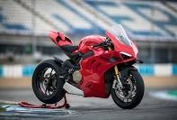

La **Ducati Panigale V4 S** es la máxima expresión de la tecnología y el ADN de carreras de la firma italiana trasladados a una moto de calle. Equipada con el motor Desmosedici Stradale V4 de 1,103 cc derivado directamente de MotoGP, esta superdeportiva ofrece una potencia impresionante que supera los 210 caballos de fuerza, combinada con un sonido ensordecedor y emocionante. Su diseño aerodinámico no solo es visualmente agresivo, sino que incorpora alerones integrados que mejoran la estabilidad a altas velocidades y la frenada, convirtiéndola en una auténtica bestia de los circuitos que mantiene la elegancia característica de Ducati. La versión **"S"** eleva el rendimiento al siguiente nivel gracias a un equipamiento ciclo de primerísima línea, destacando las suspensiones electrónicas semiactivas Öhlins que se adaptan en tiempo real al estilo de conducción y al terreno. Además, cuenta con llantas de aluminio forjado de tres radios que reducen el peso no suspendido y un arsenal electrónico de última generación (como control de tracción predictivo, ABS en curva y diferentes modos de manejo) que permite exprimir todo su potencial de forma segura. Es, en definitiva, una obra de arte de la ingeniería moderna diseñada para los entusiastas de la velocidad que buscan la experiencia de pilotaje más pura y radical.

La Yamaha YZF-R1 es una leyenda del motociclismo que destaca por su enfoque radical y su conexión directa con el desarrollo de MotoGP. El corazón de esta máquina es su icónico motor de cuatro cilindros en línea de 998 cc con cigüeñal tipo Crossplane, una configuración única que le otorga un orden de encendido irregular. Esto se traduce en una entrega de par increíblemente lineal, una tracción excepcional a la salida de las curvas y un rugido ronco y característico que emula a la YZR-M1 de carreras, entregando una potencia que ronda los 200 caballos de fuerza. Su parte ciclo está diseñada para un control milimétrico, destacando su chasis de aluminio Deltabox y un avanzado paquete electrónico gestionado por una IMU de 6 ejes. Este sistema controla el control de tracción, el control de deslizamiento, el sistema anticaballito y la gestión del freno de motor. Dato extra: Debido a las estrictas normativas ambientales europeas Euro5+, Yamaha decidió enfocar la R1 exclusivamente como una moto de pista para el mercado europeo, consolidando su estatus como un arma definitiva para los circuitos.
La Honda CBR1000RR-R Fireblade SP representa el esfuerzo más radical de la marca del ala dorada por dominar el segmento de las superdeportivas. Diseñada con una obsesión total por los circuitos, su motor de cuatro cilindros en línea de 1,000 cc hereda las cotas de cilindros (diámetro y carrera) de la indomable RC213V-S de MotoGP. Esto le permite girar a revoluciones extremadamente altas para liberar una potencia descomunal de 217 caballos de fuerza, posicionándola como una de las motos atmosféricas más potentes y rápidas en recta del planeta. La versión "SP" añade el apellido de lujo a través de unas suspensiones electrónicas Öhlins Smart EC 3.0 de última generación y frenos Brembo Stylema R, garantizando una frenada y un paso por curva impecables. Su carrocería incorpora alerones aerodinámicos avanzados que generan una enorme fuerza hacia abajo (downforce) para mantener la rueda delantera pegada al asfalto. Es una moto de carreras matriculable que exige un nivel de pilotaje alto para exprimir todo el potencial que esconde en la parte alta del tacómetro.

La Aprilia RSV4 Factory es considerada por muchos expertos como la superbike con el mejor chasis y comportamiento dinámico del mercado. Su principal seña de identidad es su motor V4 a 65° de 1,099 cc, una joya de la ingeniería italiana que entrega 217 caballos de fuerza de una manera sorprendentemente elástica y utilizable. La configuración en V no solo le otorga un sonido espectacular que enamora a cualquiera, sino que permite crear una moto sumamente estrecha y compacta, mejorando la agilidad en los cambios de dirección rápidos. El paquete "Factory" incluye lo mejor del mercado: llantas de aluminio forjado para reducir las inercias, pinzas de freno Brembo Stylema y el sistema de suspensión electrónica semiactiva Öhlins Smart EC 2.0. Además, destaca por su ergonomía y su chasis totalmente ajustable (permite variar la posición del motor, el ángulo de dirección y la altura del pivote del basculante). Dato extra: Aprilia fue la pionera absoluta en introducir alerones aerodinámicos en motos de calle, y en esta versión están integrados de forma elegante en la doble pared del carenado.

La Kawasaki Ninja ZX-10R es la reina indiscutible de la resistencia y el WSBK, construida con la experiencia de haber dominado el Campeonato Mundial de Superbikes durante casi una década. Su motor de cuatro cilindros en línea de 998 cc destaca por su fiabilidad a prueba de bombas y un sistema de accionamiento de válvulas por balancín que reduce las masas en movimiento, permitiendo que el motor suba de vueltas alegremente hasta entregar 203 caballos de fuerza (que aumentan a 213 con la asistencia del sistema Ram-Air de entrada de aire forzado). Visualmente impactante por su agresivo frontal con alerones integrados en la estructura del carenado, la ZX-10R ofrece una estabilidad sobresaliente a altas velocidades. A nivel ciclo, apuesta por la eficacia pura con suspensiones mecánicas de primer nivel Showa (horquilla BFF y amortiguador BFRC) orientadas al asfalto de competición y un paquete electrónico optimizado para la competición en circuito. Es una moto robusta, efectiva y con una puesta a punto pensada para devorar los cronómetros de manera constante vuelta tras vuelta.